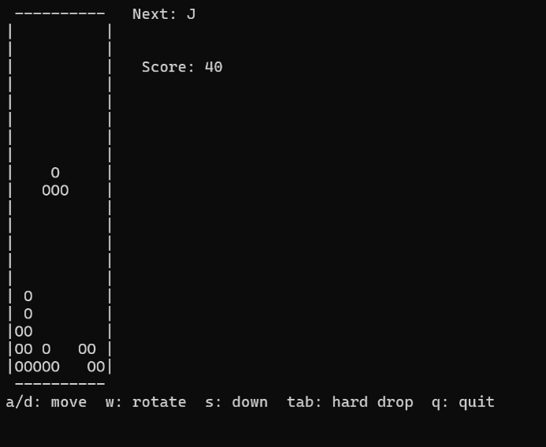

Programming Final Project
Tetris Game in C
Overview
This project is a terminal-based Tetris game written in C. It focuses on game loop design, keyboard input handling, collision detection, block rotation, line clearing, scoring, and console rendering.
Features
- 10 × 20 terminal game board
- Seven tetrominoes: I, J, L, O, S, T, Z
- Start screen and game over screen
- Keyboard-based controls
- Block movement and rotation
- Collision detection
- Line clearing
- Score calculation
- Increasing falling speed based on score
Controls
- A
- Move left
- D
- Move right
- W
- Rotate
- S
- Move down faster
- Tab
- Hard drop
- Q
- Quit
Demo

Links
Compatibility Note
This project is designed for Windows terminal because it uses windows.h and conio.h.